Blender
A free 3d Software we can use to create 3d objects.
Object Transform Property Window(s)
Select obj and press N to bring up the transform property window.
Also the T key brings up the transform tools window
3D Cursor [], crosshair left mouse
The 3d cursor that helps you change the pivot point of an object. works in all mode.
Simple test is left mouse click somewhere in 3d > shft + A > add a obj and it will be placed where 3d cursor is.
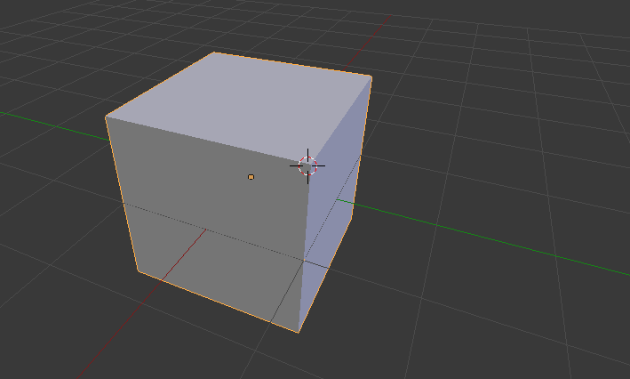 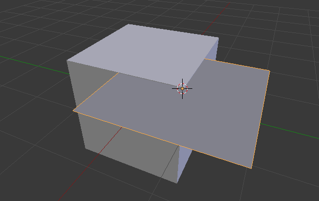Pres N to bring up the transform property window > scroll down to find 3d cursor window
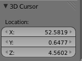Snapping 3dCursor Onto
Shft + C = to center grid
Shft + S > Cursor to grid
Set 3d Cursor Accurately
select object > edit mode > select vertex,face,edge first
Shft + S > Cursor to selected
Set Obj to 3dCursor
Shft + S > Selection to Cursor
Locking with View
Problem with zooming focus camera rate with mouse wheel? Use view property and check the lock to cursor3d to control your zoom rate and view. Press N to bring up the transform panel first then look for the view window.

Pivot []
Modify Pivot
Modify pivote permantly or change pivot of 3d object
to modify pivot > Snap 3d cursor to selected vertex or place on 3d object > press T > Origin > Origin to 3D Cursor
Set temp pivot
Rotate at pivot, scale at pivot, translate at pivot
Snap 3d cursor to a vertex or on 3d object to pivot from > pivot point btn (bottom panel) > 3D Cursor > rotate
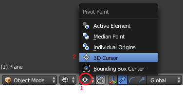Snapping []
In object mode, use shft+tab to turn on snapping and again to turn off.
move object by right click and hold, then use x,y,z to further combine and snap to an axis
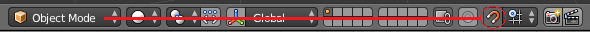snap obj to center of grid
This method will use the object's pivot point > object mode > Select model > Alt + G
Create Mesh []
shortcut create
LMB to place 3d cursor in scene > Shft + A > select mesh
Upon creation, you get a little window to define its final properties before the mesh is final
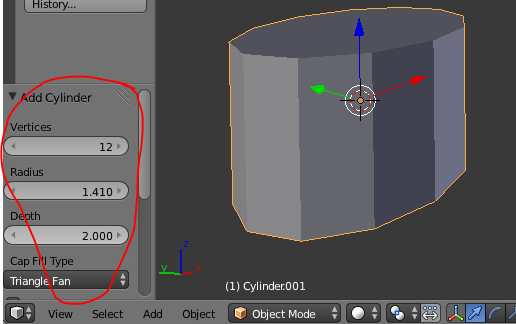Slice
edit mode > select edge > T to bring up left panel > loop cut and slide
Transformation [] Reset []
Move, rotate, scale
In blender the keys are G(grab), R(rotate), S(scale) - then combine with xyz for axis control, and shft for smaller control
Shortcut to move in axis is press G, then MMB and drag in a direction
Freeze Transformation
You are done scaling, translating, rotating, now you want object to set object to have zero values for export
Zero out object's transformation, Obj shape size, stays the same.
In blender, it is known as apply. Object mode > select object > Ctrl + A > choose one or all (one at a time) to reset
Undo Transformation
In blender, it is known as clear. Move, rotate, scale back to orginal values = Alt + G
Normals []
Recalculate All Sides
Select obj > edit mode > Face > A for all face selected
Ctrl + N = recalculate all normals face outside
Ctrl + Shft + N = recalculate all normals face inside
Display Normals
edit mode > Press N > Mesh Display > select face to display normals
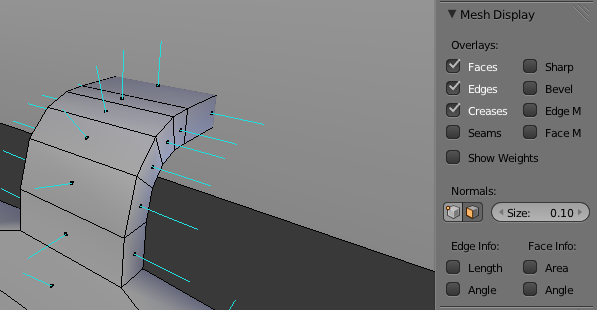Flip 1 Face
Edit mode > select face > press T > shading/UVs
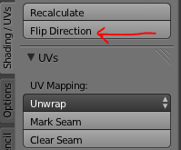Cutting
Cut through obj
Use the bisect tool as the knife tool is funky. Edit mode > bisect (or spacebar > type bisect)
Combine [] Separate [] Parent []
Combine/Separate
This is different than parenting. Ctrl + J (combine)
edit mode > select faces > press P > select type to separate by
Parent/unparent
Parent - Ctrl + P
UnParent - select obj > bottom menu Object > parent > clear parent
Workspace Layout []
New Work Space
At the top menu > select default > this will load the default layout
Now that the default layout is loaded > click + > rename the layout > modify your panels however you want > note that the layout is constantly being saved when you change the layout under that layout name
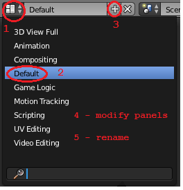Switch Layout Shortcut
Control Right/Left arrow to toggle between different workspace. Ex: UV workspace, default.
Ctrl + Up will focus/zoom into that window, press again to exit
Deafult Startup File
First backup and save the default layout as the startup file with Ctrl+U
Then > modify and choose your layout and save the file > Ctrl + U > this will deafult blender to load this current file, material, layout, models at startup
Import blend file without UI changes
Load your start up file > open file > uncheck load UI at bottom.
Top Bar
Top bar is simply the bottom bar with the option selected to info, incase you ever lose it.
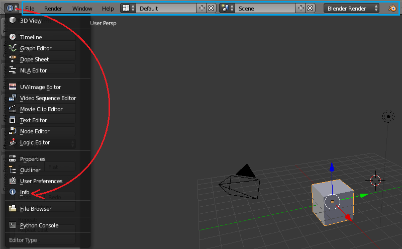Right Side Layout
The right side bar is basicaly made up of 3 different view ports. Each one loads a different bottom menu.
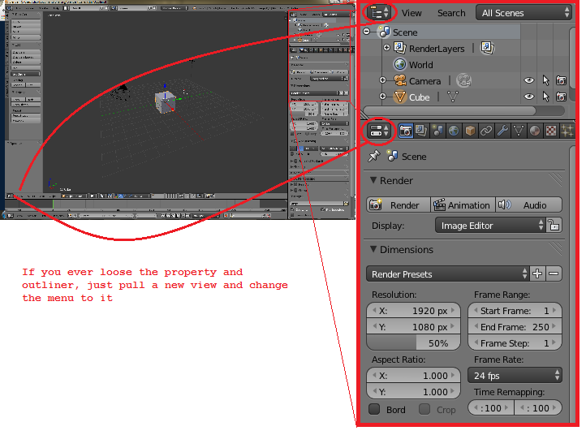Obj Mtl Files
Mtl
Order of statements doesn't matter once you start with the newmtl my_newMatName(cannot contain blank spaces). Everything from here until you specify another newmtl, will belong to this material.
More Info Heremap_Kd = someBricks.jpg
this path is relative to where the mtl file is. to go one folder in, do map_Kd = textures\someBricks.jpg
Ka = ambient reflectivity rgb
Kd = diffuse/color material
Tf = transmission filter for light pass rgb
Ks = reflectivity
d alpha = transparency (some use either d or Tr, deafult = 1.0 no transparency)
Tr alpha = transparency (some use either d or Tr, deafult = 1.0 no transparency)
Mtl-Shelving
These are the mtl settings that current models follow
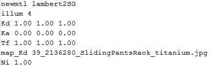Remove Material [] Clear Material []
Material
go to object material > Click the X icon then save the blender file and reload with Ctr+Shft+O to clear the material
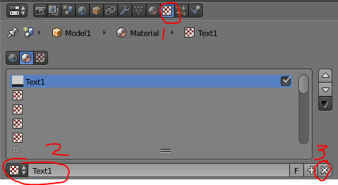Display []
All Edges
Object mode > object properties > display > draw all edges
Object Info []
Vertex Count, edge count
Top right hand corner will display the total vertex in scene
To view individual object count, select obj > edit mode > and top right hand vertex will update to object only
Scaling 3D Obj
Basic
Object mode > S
use x,y,z to further combine and snap to an axis scale mode. Combine with numpad view 7,1,3 for better view
Reset Scale
After modifying object to scale, Ctrl+A > Scale to reset the size to 1
Flip []
Mirror
Object mode > Shft+D (duplicat) > press T > Mirror > use setting in lower left to control the mirror
you may want to duplicate and set the pivot point before mirroring
Reset Scale
After modifying object to scale, Ctrl+A > Scale to reset the size to 1
Extrude []
Along a Path
use a curve, not yet looked into
extrude 90 degree, bend
pipe, 90 angle
select fact > ortho top view press 7 > place 3d cursor > press T > Tools > add > Spin > dial in numbers to extrude to
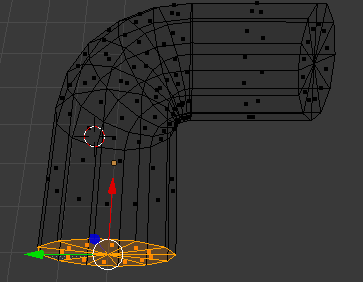
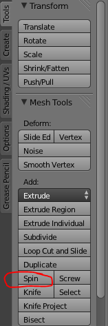
Camera []
Lens modification
Default is 35mm, to change focal length select the camera icon
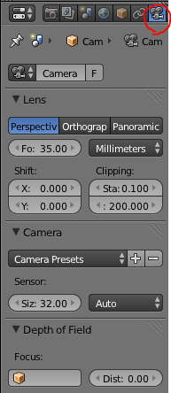
Ortho
Select Cam > Camera Len Icon/Context > Select Ortho

Set Active Cam
When you have multiple camera, to set new camera as your numpad 0, select cam > Ctrl + 0, then use numpad 0 to toggle in view
Cam Point To Current View
Navigate normally in 3d perspective to where you want the cam to face and see > select camera in outline > Ctrl + Alt + numPad 0
or 3D View menu: View -> Align View -> Align Active Camera to View
Cam Point To Object
Add a constaint to an object, more advance, but not efficient
Render []
Align camera to view (ctrl + Alt + 0) then Press F12 to preview render, esc to close. You must manually
save the file doing it this way
Render 1 frame vs animation. Clicking the action icon will render animation.
Warning:It will start rendering 250 frames by default.
Esc to stop and again to close render view.
Change the start and end to 1 to render just one frame.
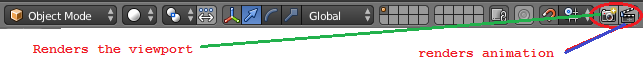
icon above is usually located at the bottom of each view

Transparent Background
Make sure you obj has a material. > output set to RGBA > Shading to Transparent
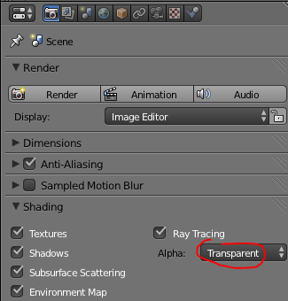
or
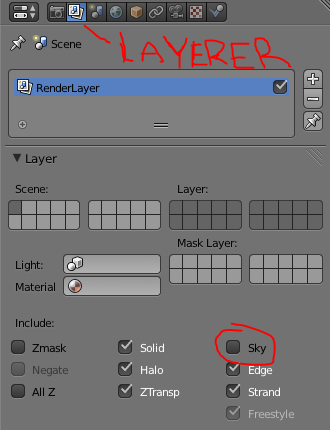
More Smooth Render
Subdivision
Ctrl+1 - Ctrl+5 will smooth your object. Ctrl+0 to return to no sub. This will increase smoothness in render.
Transparent Texture
you have to enable Z-transparency and set alpha of the material to '0'

then tell blender texture should affect alpha channel > turn on texture alpha and leave it at one.
the .mtl will now include d set to 0.0, and map_d set to it's alpha image.
 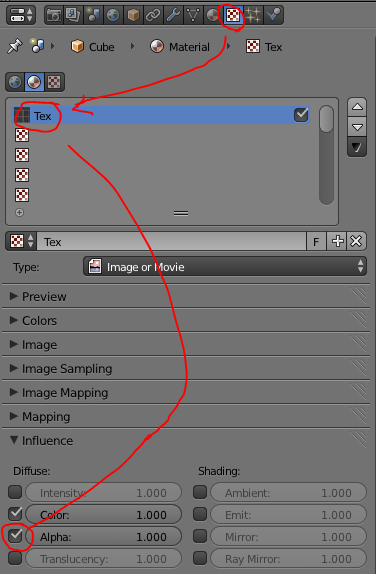
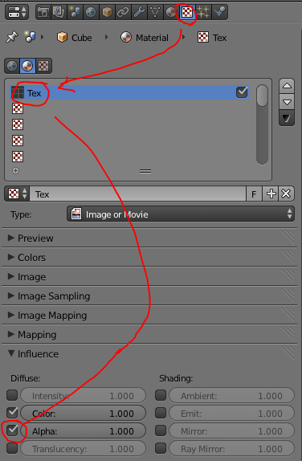
Auto Subdivision
If your sharp edges are being rendered round, and seems like a render issue,
it is probably because you have your render settings set to audo subdivide. This can happen if you accidently press the hotkey
for subdividing your models
Set it to zero to go back to default, or use this as a way to subdivide all renders

UV Editor []
Where you wrap texture around 3d objects
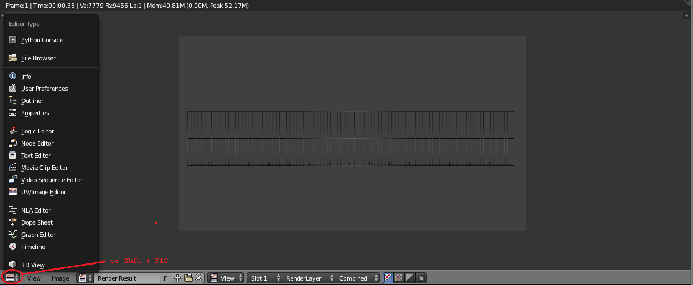
Shft+F10 to jump to UV Editor view. use Shft+F5 to go back to standard view.
NOtE: To see any uvs, you must also load an image, Alt + O
Select your obj > edit mode > vertex > A for all >
then U for unwrap, or UV > unwarp
If the object doesn't alredy have UV created, press U > choose cube projection or smart projection, then unwrap
If object does not have UV, you will not see a UV tab
Cutting UV
AKA marking Seams. select vertices like a line of vertices (Shft+Alt+LMB on a vertex) >
Ctrl + E (bring up mesh menu) > Edges > and mark seams. This will to tell UV editor
to cut the seam where selected.
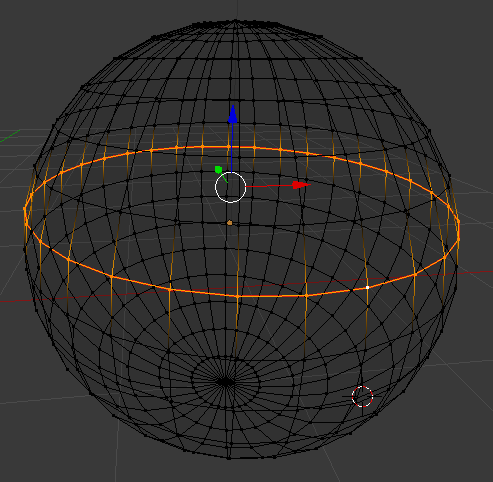
Unwrapping UV
(optional) Ensure you have mark seams to edge using Cutting UV. Have another window with UV Editor open.
Select object > Edit mode > A to select all vertices > U (unwrap menu) > unwrap. The UV Editor should show unwrapped UVs.
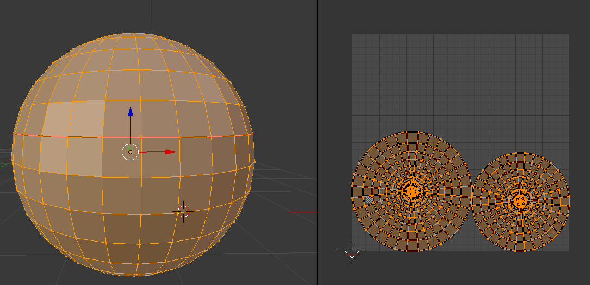
In UV Editor, to move uv islands, select a vertex, Press L to auto slect the island.
Use (S)cale, (R)otate, (G)rab, (B)order, (A)select/deselect all to move the islands.
Stitching UVs
Project UVs first on your selected faces in edit mode > uv editor > select all visible uvs press A > Ctrl+P (pack island) >
select 2 edges > stich (V key) > enter to confirm > continue uv editing
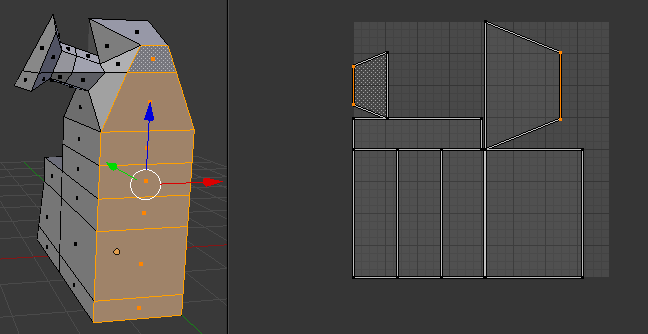
press enter to confirm after sticthing, select one edge > Press L to select island > move,rotate,scale as need
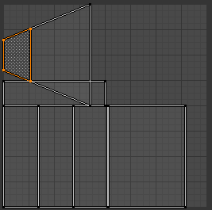
Display Object with Texture
Set shading to texture in view port
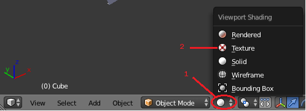
Base on your lighting, you'll see parts of your model shaded. Add more lights to rough out your shading.
To make your texture renderable, you need to add new material to the object.
UV Render Issue
Blender allows one object to have mutliple uv sets. In case your obj has multipe UV sets, to render the correct uv at render, make sure the correct uvset is selected
using the camera icon by turning it on.
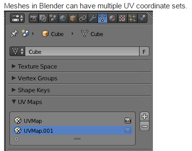
Then check to make sure you have material, texture, and texture is mapped to uv
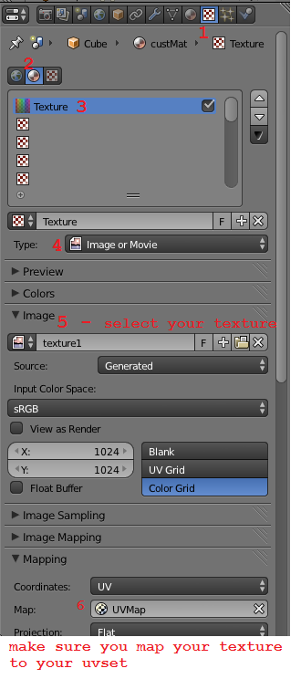
Repeat Last Action []
Shft+A to create a cube and place it in a new location > F3 > select recent action to tile
Context [] Property Panel []
When you select an 3d object in view, this panel will dynamically change.
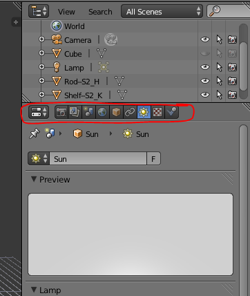
Lighting property can be modify using this panel
Material [] & Texture [] (material/texture)
Add Material
To see renderable texture, object must have material and texture setup.
Select object > go to Material Context > create new material
Also create a texture. You can then preview the shader in view, without having to render.
After setup, you can render and will see material with texture.

Add Texture File
To use an image as texture > texture context > set type to Image or Movie
> then load your file

Preview of your shader
After you add material and texture you can use the preivew window to see it

Selection [] Selecting []
Single/Custom Selection
Right click to select the obj, vertext, edge, face. B + LMB drag to select multiple selecitons. Shft to selected addon selections.
Select through obj
Select all = Ctrl = A
select vertex/face/edge including other side = turn on x-ray mode (Z) > B to toggle custom select > LMB drag
Deselect
Alt + A
View [] View Mode [] and Panel
Controls what object is lock, selectable, renderable, and can be used for selection
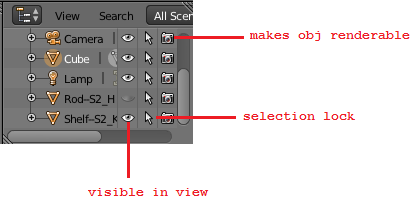
Toggle Camera View Mode
Use the num key pads
0 = cam/user perspective
7 = top ortho
1 = side ortho
3 = front ortho
5 = perspecitve vs ortho
. = focus cam back to center of scene if nothing is selected
. = focus cam to selected object
Ctrl + Shft + MMB + hold = move mouse forward and back to slowly zoom in
If zooming becomes too slow, select object in object mode, press . to reset the zoom factor
Set the active camera as main = Ctrl + 0 then use numpad 0 to change view
Toggle wireframe/x-ray
press z or see image
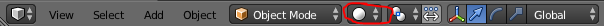
Pop view window out
Shft + LMB + drag on top right corner to pull out individual views
Edit Mode
basic
Move, Scale, Rotate, use the gimbal panel tool at the bottom in boject mode.
clicking will show the icon in the screen view.

Node Editor [] node []
Can be used for material editing and as an image compositing software
To use you should have two windows up, node editor and UVEditor, or load the compositing layout.
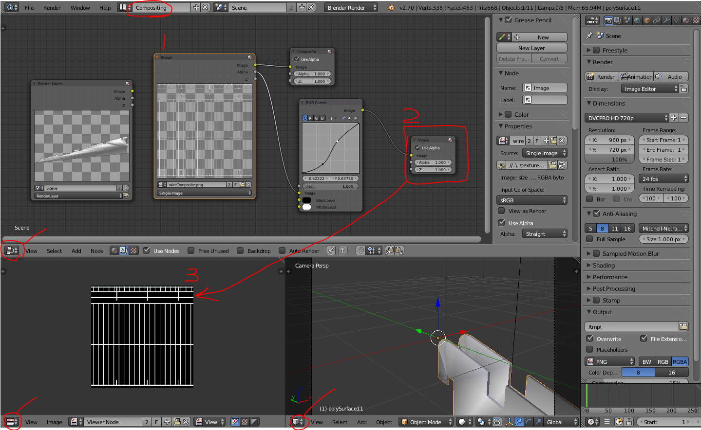
Basic
To use nodes, you first need to enable nodes by checking use nodes in the Node Editor window. Make sure to check it off
when you want to do regular 3d render from the camera views. Leaving it on and F12 will render the nodes instead.

For image, nodes work together with the UV Editor. To see the image from nodes in the UV Editor, you need to create
a few things: Image, Viewer - use Shft+A > input > image and again but output > Viewer. select the node, and in UV Editor,
select Viewer Node to see the image.
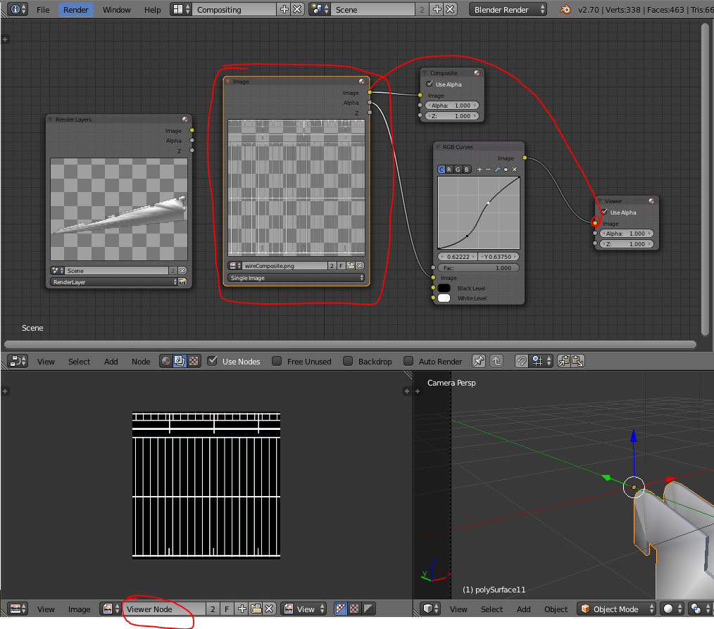
Adding Nodes
Make sure use nodes is check > Shft+A > search for your nodes or select from popup menu
Mix, Translate, Scale, Mask, Viewer, Image, Z Combine etc to name a few
Nodes that go together: Mask,Mix
Connecting Nodes
Blender makes it really simple to know what nodes can connect to each other. Left connectors are input and right side
are outputs
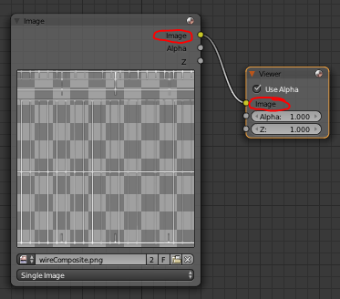
Combine Images
Only one image needs to connect its Z output to the z combine, then select the viewer node to be display in UV editor.
UV Editor should have viewer node selected to see it.
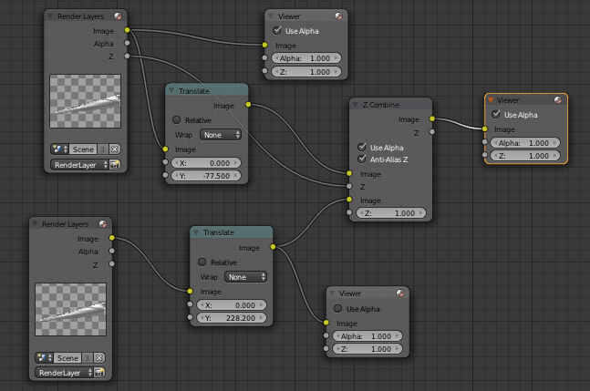
Composite multiple views
Method1: The trick is to duplicate the obj and turn it on its side, and render it in one layer.
The render layers only work with one camera, not multiple cameras
Method2: Use two scenes, one object in each scene, then render. and you should be good. Below is more advance if you care.
Link
obj1 to be in layer 1 and obj2 in layer 2 > layers tab > layer1 set to render > create a 2nd scene.

select link objects > select cam > U > Object and Data
(make camera independent from other scene > adjust cam to your liking > still in new scene > layers tab > select 2nd layer to be render.
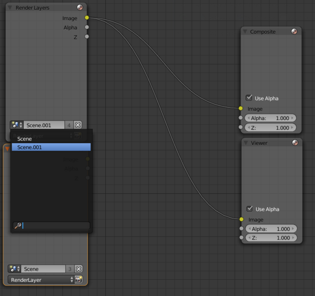
Render Layers [] Scene Layers []
Allow us to composite renders sepearetly like layers
Add Obj To Layer
Select an obj > Press M > select layer. Obj can be on multipe layers, use Shft.
Press 1,2,3, to change scene layers on the first row, Alt+1, Alt+2, ... for the 2nd row
Under Layer property context > Then select each render layer, and select the layers it can render. Pressing F12 or render,
will render however many render layers that were checked. Name each render layer accordingly for less confusion.
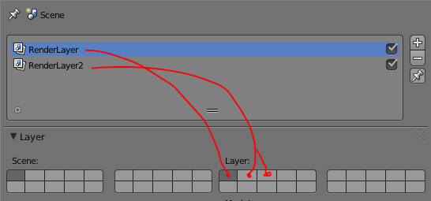
More RenderLayers
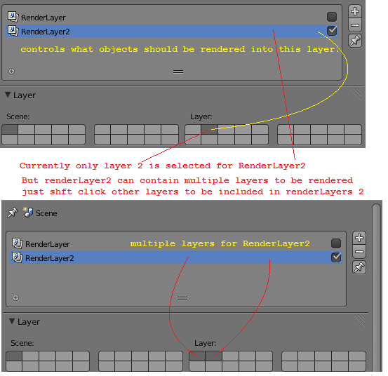
Scene Layers
Scene layers on the other hand are just for displaying what gets display on screen for easier to work with complex scene.
Only objects in scene layer will be rendered
Objects not visible in scene layer, but selected in render layers, will not render.
Objects in scene layer but not in render layer, will still cast shadow for other objects. Use this for like shadow trick renders
Slots
Select a different slot before rendering to store the render image in a buffer
Tips
Universal Edit
Tab
Toggle between object and edit mode > Ctrl + Tab > 1,2,3 to toggle between vertex,edge,face
S
Scale + dial numbers + xyz for direction or Shft+xyz for global/local switch
R
Rotate + dial numbers + xyz for direction
G
Grab/Move + dial numbers + xyz for direction
Alt + S
Shrink/Grow with mouse move
Ctrl + middle mouse click + move
pan in/out
W
More Subdivision options
X
Delete Menu
Alt + Space
Orientation
Ctrl + Space
Transform Manipulators
Cutting Face
Be in edit mode > Tools > Add > Loop Cut and Slide
Camera/View Mode
Use number key pad
7 = top, 5 = perspective, 1 and 3 for side veiw
Ctrl + 0
Set active camera as main, select cam first
X-Ray
Z
Vertex
Ctrl + V
Vertex Option
Alt + M
With two vertex, face, selected, when press, merges two vertex with options.
Shft + V
Slide vertex.
Edges
Ctrl + E
Edge Option
Faces
Ctrl + F
Face Option
Ctrl+R
Create edge loop + mouse scroll or pageUpDown or more edges
K
Knife/Cut faces : use Shft + K for cut selected face only : ctrl to snap center
E
Extrude
P
Extract selected into separate mesh object
Y
Extract selected within mesh
Ctrl + B
Bevel
Objects
Shft + A
Add new mesh, LMB to place 3d cursor first then press shorcut key to add a mesh to this point
Ctrl + J
Combine meshes, Joins the selected meshes together into one
press p
select object > edit mode > select faces > P > (choose separate type)
Shft + D
Duplicate - use G + xyz to snap to axis
F3
Repeat last action, after you choose, press again to go faster
Pivots
Ctrl + Shft + Alt + C
Center Pivot > origin to geometry
Hints
Select 3D object in general
Use the right click instead of the left click
Select by Face, vertex, edge
First go into edit mode, then look for the 3 icons to switch between the kind of selection.
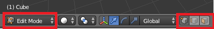
Move Rotate Scale
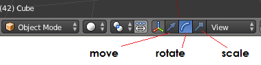
Close windows
You can try click&Drag the upper right corner of one window and drop over another window. If that doesn't work, hover between two windows and you get an arrow, right click and select "Join Area" and select the window you wish to replace.
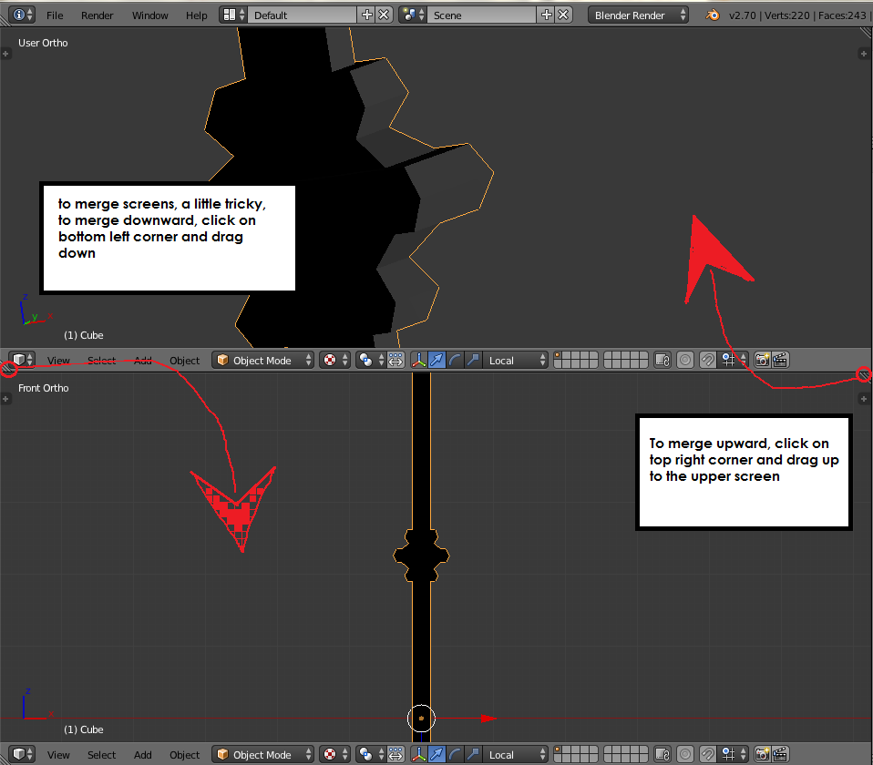
Mirror
Object mode > Shft+D (duplicat) > press T > Mirror > use setting in lower left to control the mirror
you may want to duplicate and set the pivot point before mirroring
Reset Scale
After modifying object to scale, Ctrl+A > Scale to reset the size to 1
Along a Path
use a curve, not yet looked into
extrude 90 degree, bend
pipe, 90 angle
select fact > ortho top view press 7 > place 3d cursor > press T > Tools > add > Spin > dial in numbers to extrude to
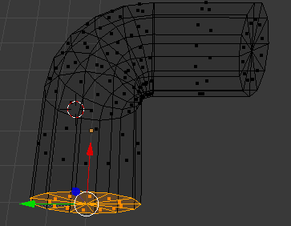 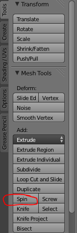Lens modification
Default is 35mm, to change focal length select the camera icon
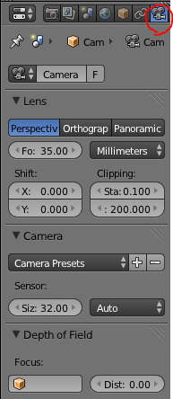Ortho
Select Cam > Camera Len Icon/Context > Select Ortho
Set Active Cam
When you have multiple camera, to set new camera as your numpad 0, select cam > Ctrl + 0, then use numpad 0 to toggle in view
Cam Point To Current View
Navigate normally in 3d perspective to where you want the cam to face and see > select camera in outline > Ctrl + Alt + numPad 0
or 3D View menu: View -> Align View -> Align Active Camera to View
Cam Point To Object
Add a constaint to an object, more advance, but not efficient
Align camera to view (ctrl + Alt + 0) then Press F12 to preview render, esc to close. You must manually save the file doing it this way
Render 1 frame vs animation. Clicking the action icon will render animation. Warning:It will start rendering 250 frames by default. Esc to stop and again to close render view. Change the start and end to 1 to render just one frame.
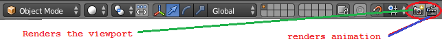icon above is usually located at the bottom of each view
Transparent Background
Make sure you obj has a material. > output set to RGBA > Shading to Transparent
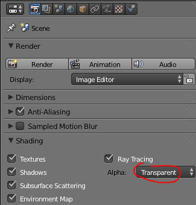or
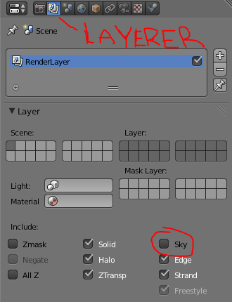More Smooth Render
Subdivision
Ctrl+1 - Ctrl+5 will smooth your object. Ctrl+0 to return to no sub. This will increase smoothness in render.
Transparent Texture
you have to enable Z-transparency and set alpha of the material to '0'
then tell blender texture should affect alpha channel > turn on texture alpha and leave it at one.
the .mtl will now include d set to 0.0, and map_d set to it's alpha image.
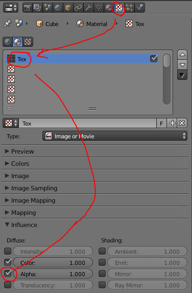
Auto Subdivision
If your sharp edges are being rendered round, and seems like a render issue, it is probably because you have your render settings set to audo subdivide. This can happen if you accidently press the hotkey for subdividing your models
Set it to zero to go back to default, or use this as a way to subdivide all renders
Where you wrap texture around 3d objects
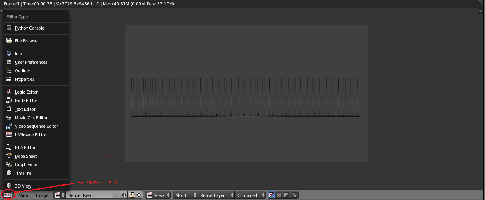Shft+F10 to jump to UV Editor view. use Shft+F5 to go back to standard view.
NOtE: To see any uvs, you must also load an image, Alt + O
Select your obj > edit mode > vertex > A for all > then U for unwrap, or UV > unwarp
If the object doesn't alredy have UV created, press U > choose cube projection or smart projection, then unwrap
If object does not have UV, you will not see a UV tab
Cutting UV
AKA marking Seams. select vertices like a line of vertices (Shft+Alt+LMB on a vertex) > Ctrl + E (bring up mesh menu) > Edges > and mark seams. This will to tell UV editor to cut the seam where selected.
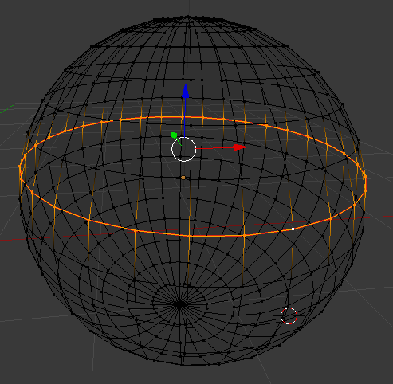Unwrapping UV
(optional) Ensure you have mark seams to edge using Cutting UV. Have another window with UV Editor open. Select object > Edit mode > A to select all vertices > U (unwrap menu) > unwrap. The UV Editor should show unwrapped UVs.
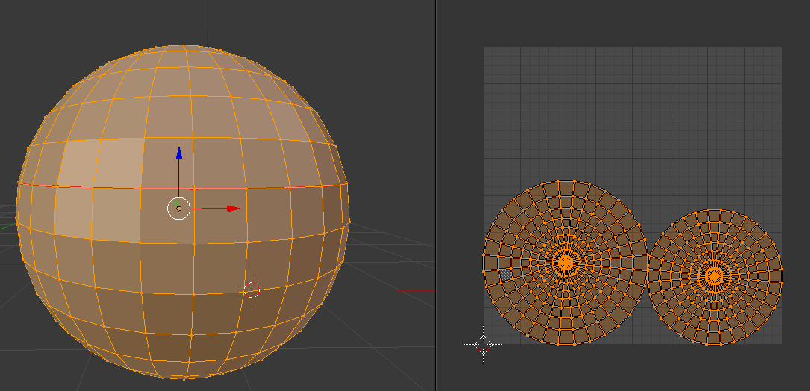In UV Editor, to move uv islands, select a vertex, Press L to auto slect the island. Use (S)cale, (R)otate, (G)rab, (B)order, (A)select/deselect all to move the islands.
Stitching UVs
Project UVs first on your selected faces in edit mode > uv editor > select all visible uvs press A > Ctrl+P (pack island) > select 2 edges > stich (V key) > enter to confirm > continue uv editing
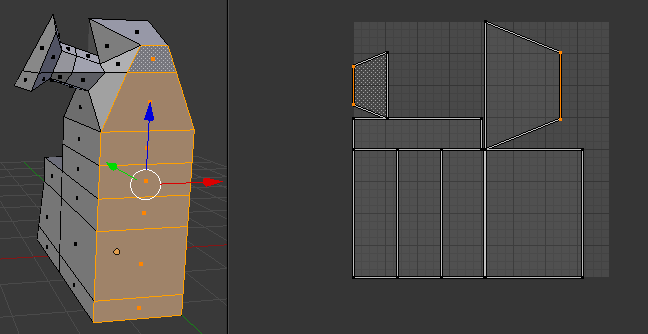press enter to confirm after sticthing, select one edge > Press L to select island > move,rotate,scale as need
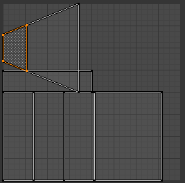Display Object with Texture
Set shading to texture in view port
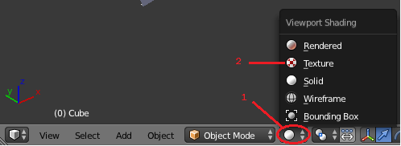Base on your lighting, you'll see parts of your model shaded. Add more lights to rough out your shading. To make your texture renderable, you need to add new material to the object.
UV Render Issue
Blender allows one object to have mutliple uv sets. In case your obj has multipe UV sets, to render the correct uv at render, make sure the correct uvset is selected using the camera icon by turning it on.
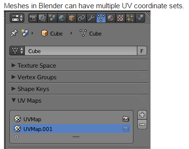Then check to make sure you have material, texture, and texture is mapped to uv
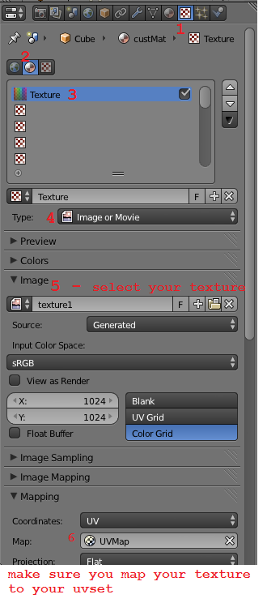Shft+A to create a cube and place it in a new location > F3 > select recent action to tile
When you select an 3d object in view, this panel will dynamically change.
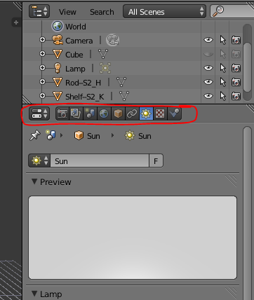Lighting property can be modify using this panel
Add Material
To see renderable texture, object must have material and texture setup. Select object > go to Material Context > create new material Also create a texture. You can then preview the shader in view, without having to render. After setup, you can render and will see material with texture.
Add Texture File
To use an image as texture > texture context > set type to Image or Movie > then load your file
Preview of your shader
After you add material and texture you can use the preivew window to see it
Single/Custom Selection
Right click to select the obj, vertext, edge, face. B + LMB drag to select multiple selecitons. Shft to selected addon selections.
Select through obj
Select all = Ctrl = A
select vertex/face/edge including other side = turn on x-ray mode (Z) > B to toggle custom select > LMB drag
Deselect
Alt + A
Controls what object is lock, selectable, renderable, and can be used for selection
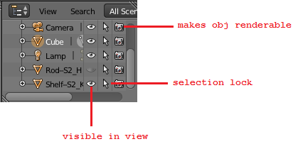Toggle Camera View Mode
Use the num key pads
0 = cam/user perspective
7 = top ortho
1 = side ortho
3 = front ortho
5 = perspecitve vs ortho
If zooming becomes too slow, select object in object mode, press . to reset the zoom factor
Set the active camera as main = Ctrl + 0 then use numpad 0 to change view
Toggle wireframe/x-ray
press z or see image
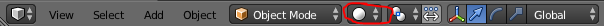Pop view window out
Shft + LMB + drag on top right corner to pull out individual views
basic
Move, Scale, Rotate, use the gimbal panel tool at the bottom in boject mode. clicking will show the icon in the screen view.
Can be used for material editing and as an image compositing software
To use you should have two windows up, node editor and UVEditor, or load the compositing layout.
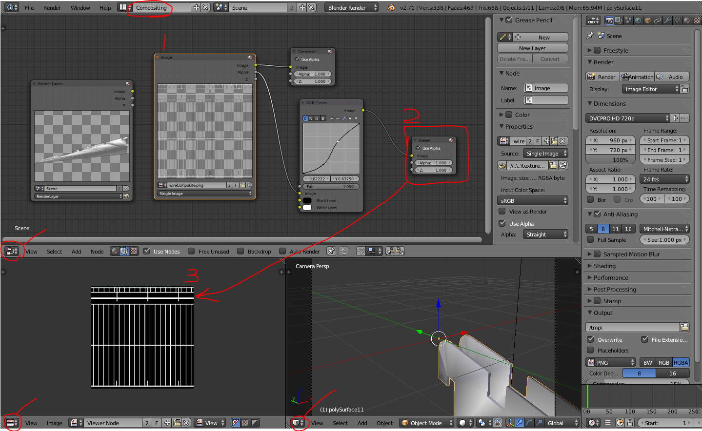Basic
To use nodes, you first need to enable nodes by checking use nodes in the Node Editor window. Make sure to check it off when you want to do regular 3d render from the camera views. Leaving it on and F12 will render the nodes instead.
For image, nodes work together with the UV Editor. To see the image from nodes in the UV Editor, you need to create a few things: Image, Viewer - use Shft+A > input > image and again but output > Viewer. select the node, and in UV Editor, select Viewer Node to see the image.
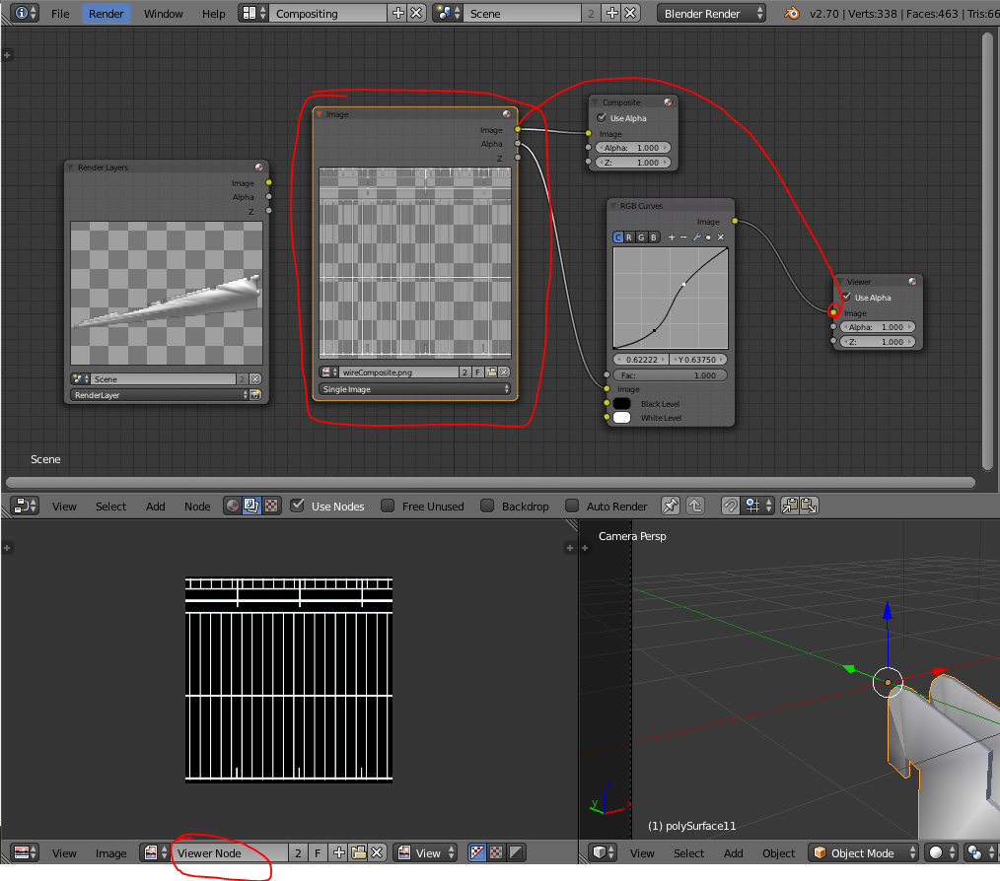Adding Nodes
Make sure use nodes is check > Shft+A > search for your nodes or select from popup menu
Mix, Translate, Scale, Mask, Viewer, Image, Z Combine etc to name a few
Nodes that go together: Mask,Mix
Connecting Nodes
Blender makes it really simple to know what nodes can connect to each other. Left connectors are input and right side are outputs
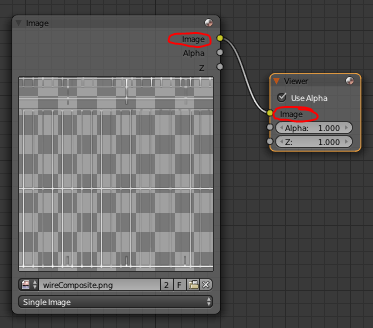Combine Images
Only one image needs to connect its Z output to the z combine, then select the viewer node to be display in UV editor. UV Editor should have viewer node selected to see it.
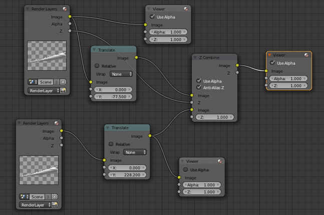Composite multiple views
Method1: The trick is to duplicate the obj and turn it on its side, and render it in one layer. The render layers only work with one camera, not multiple cameras
Method2: Use two scenes, one object in each scene, then render. and you should be good. Below is more advance if you care.
Link
obj1 to be in layer 1 and obj2 in layer 2 > layers tab > layer1 set to render > create a 2nd scene.
select link objects > select cam > U > Object and Data (make camera independent from other scene > adjust cam to your liking > still in new scene > layers tab > select 2nd layer to be render.
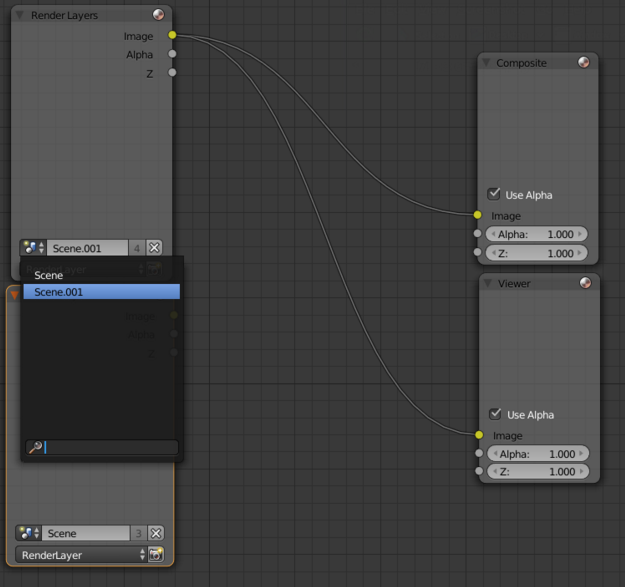Allow us to composite renders sepearetly like layers
Add Obj To Layer
Select an obj > Press M > select layer. Obj can be on multipe layers, use Shft.
Press 1,2,3, to change scene layers on the first row, Alt+1, Alt+2, ... for the 2nd row
Under Layer property context > Then select each render layer, and select the layers it can render. Pressing F12 or render, will render however many render layers that were checked. Name each render layer accordingly for less confusion.
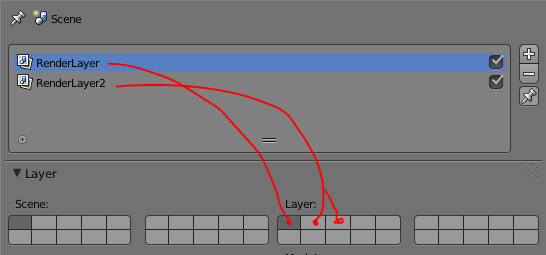More RenderLayers
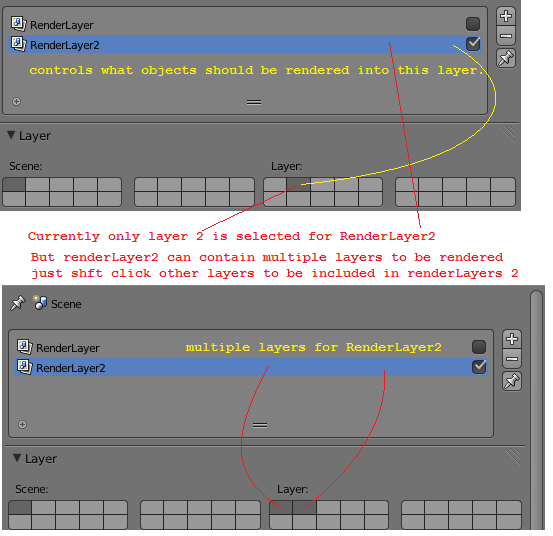Scene Layers
Scene layers on the other hand are just for displaying what gets display on screen for easier to work with complex scene.
Only objects in scene layer will be rendered
Objects not visible in scene layer, but selected in render layers, will not render.
Objects in scene layer but not in render layer, will still cast shadow for other objects. Use this for like shadow trick rendersSlots
Select a different slot before rendering to store the render image in a buffer
| Universal Edit | |
|---|---|
| Tab | Toggle between object and edit mode > Ctrl + Tab > 1,2,3 to toggle between vertex,edge,face |
| S | Scale + dial numbers + xyz for direction or Shft+xyz for global/local switch |
| R | Rotate + dial numbers + xyz for direction |
| G | Grab/Move + dial numbers + xyz for direction |
| Alt + S | Shrink/Grow with mouse move |
| Ctrl + middle mouse click + move | pan in/out |
| W | More Subdivision options |
| X | Delete Menu |
| Alt + Space | Orientation |
| Ctrl + Space | Transform Manipulators |
| Cutting Face | Be in edit mode > Tools > Add > Loop Cut and Slide | Camera/View Mode |
| Use number key pad | 7 = top, 5 = perspective, 1 and 3 for side veiw |
| Ctrl + 0 | Set active camera as main, select cam first |
| X-Ray | Z | Vertex |
| Ctrl + V | Vertex Option |
| Alt + M | With two vertex, face, selected, when press, merges two vertex with options. |
| Shft + V | Slide vertex. | Edges |
| Ctrl + E | Edge Option | Faces |
| Ctrl + F | Face Option |
| Ctrl+R | Create edge loop + mouse scroll or pageUpDown or more edges |
| K | Knife/Cut faces : use Shft + K for cut selected face only : ctrl to snap center |
| E | Extrude |
| P | Extract selected into separate mesh object |
| Y | Extract selected within mesh |
| Ctrl + B | Bevel | Objects |
| Shft + A | Add new mesh, LMB to place 3d cursor first then press shorcut key to add a mesh to this point |
| Ctrl + J | Combine meshes, Joins the selected meshes together into one |
| press p | select object > edit mode > select faces > P > (choose separate type) |
| Shft + D | Duplicate - use G + xyz to snap to axis |
| F3 | Repeat last action, after you choose, press again to go faster | Pivots |
| Ctrl + Shft + Alt + C | Center Pivot > origin to geometry |
| Hints | |
|---|---|
| Select 3D object in general | Use the right click instead of the left click |
| Select by Face, vertex, edge | First go into edit mode, then look for the 3 icons to switch between the kind of selection. 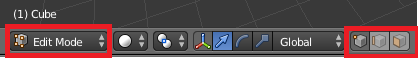 |
| Move Rotate Scale | 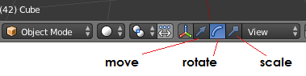 |
| Close windows | You can try click&Drag the upper right corner of one window and drop over another window. If that doesn't work, hover between two windows and you get an arrow, right click and select "Join Area" and select the window you wish to replace. 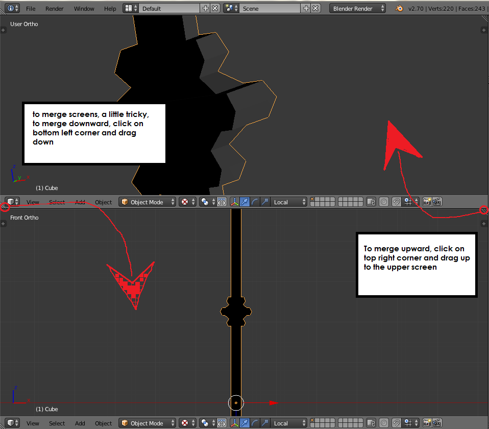 |